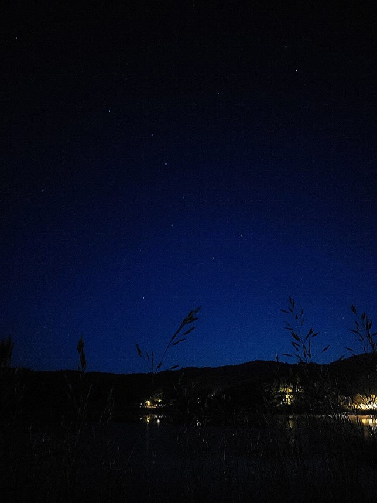
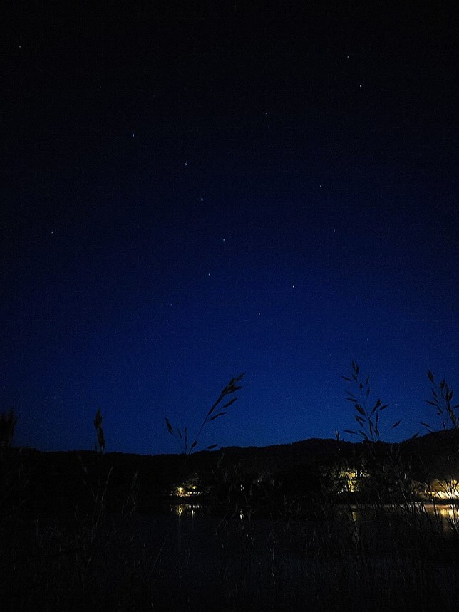
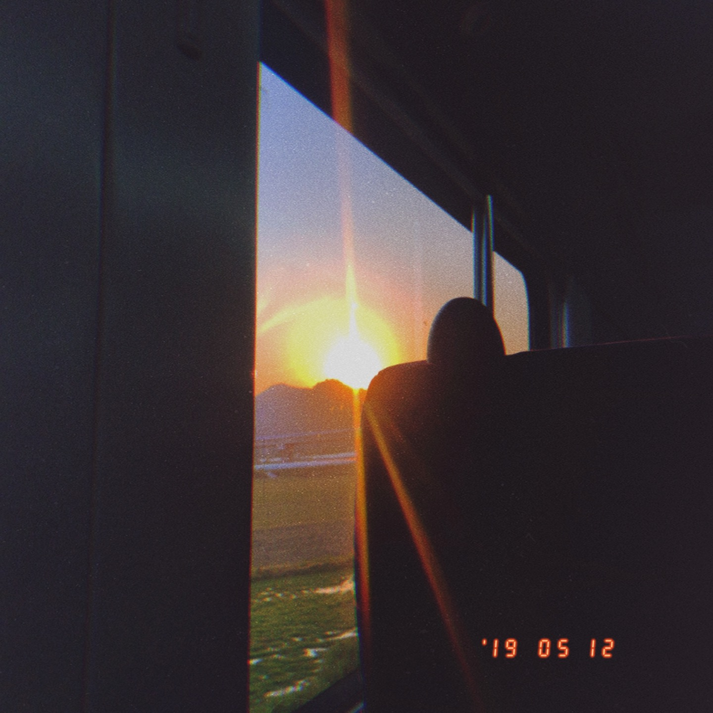
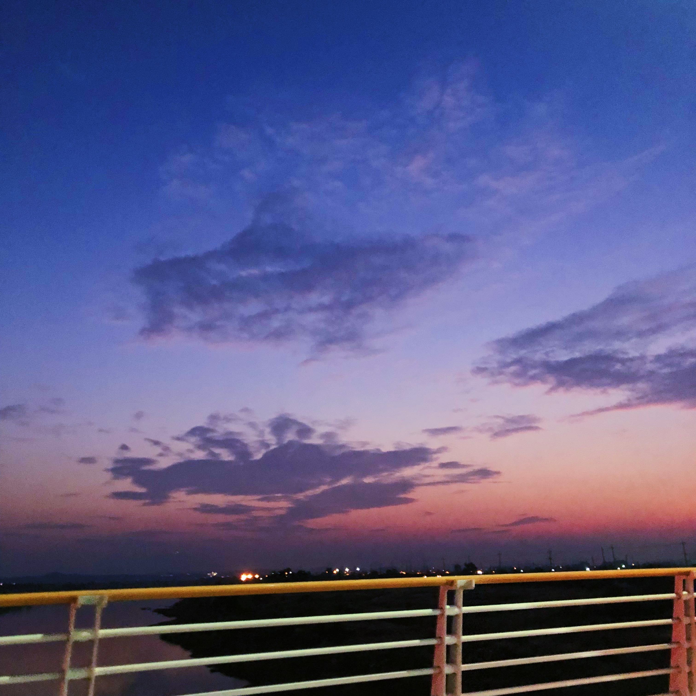
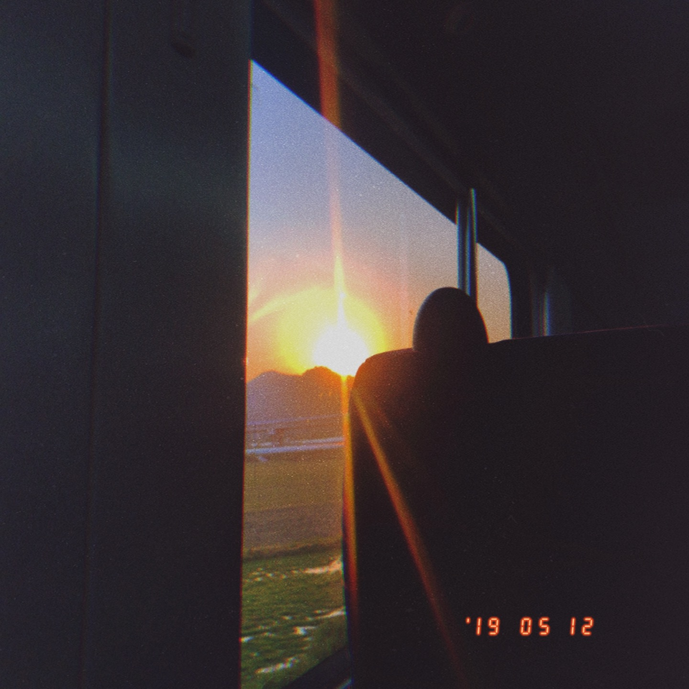
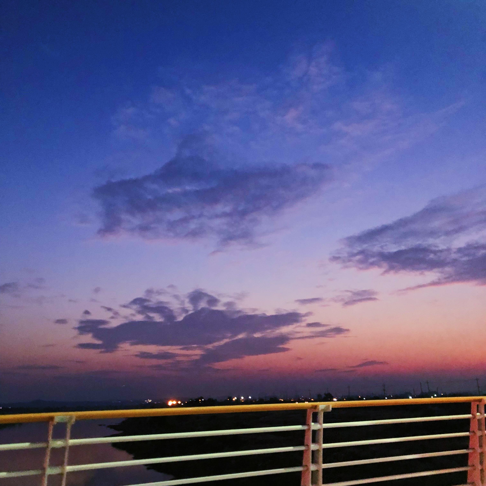
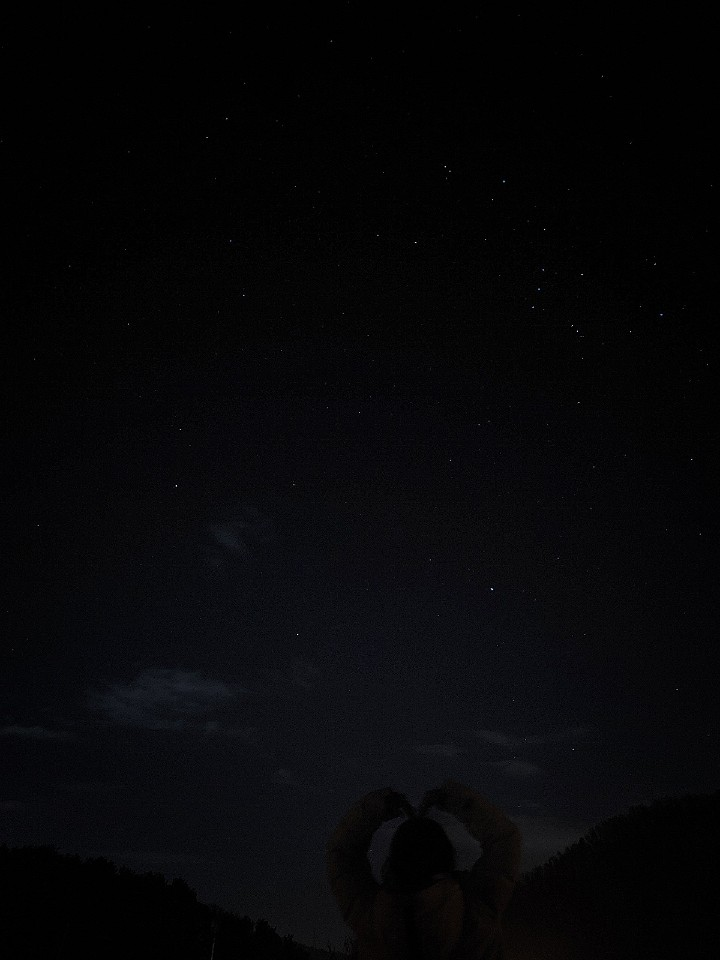
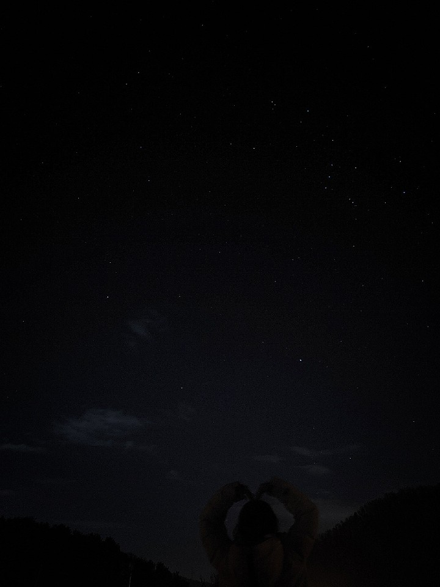

2019 Polaris
Photo exhibition
High quality club Astronomical Observation in Hongik University
High quality club Astronomical Observation in Hongik University


폴라리스는 수업과 과제에 지친 여러분의 심신을 아무생각없이 하늘을 보며 치유하자는 취지에서 시작된 홍익대학교 고품격 천체관측 동아리입니다.
정기적인 관측을 진행하고 있으며, 다양한 외부활동 구상을 통해서 동아리 회원뿐만이 아닌 전교생의 힐링을 목표로 두고있습니다.


 



 




 
